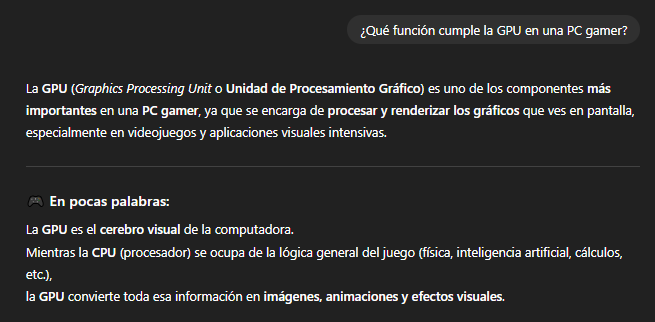
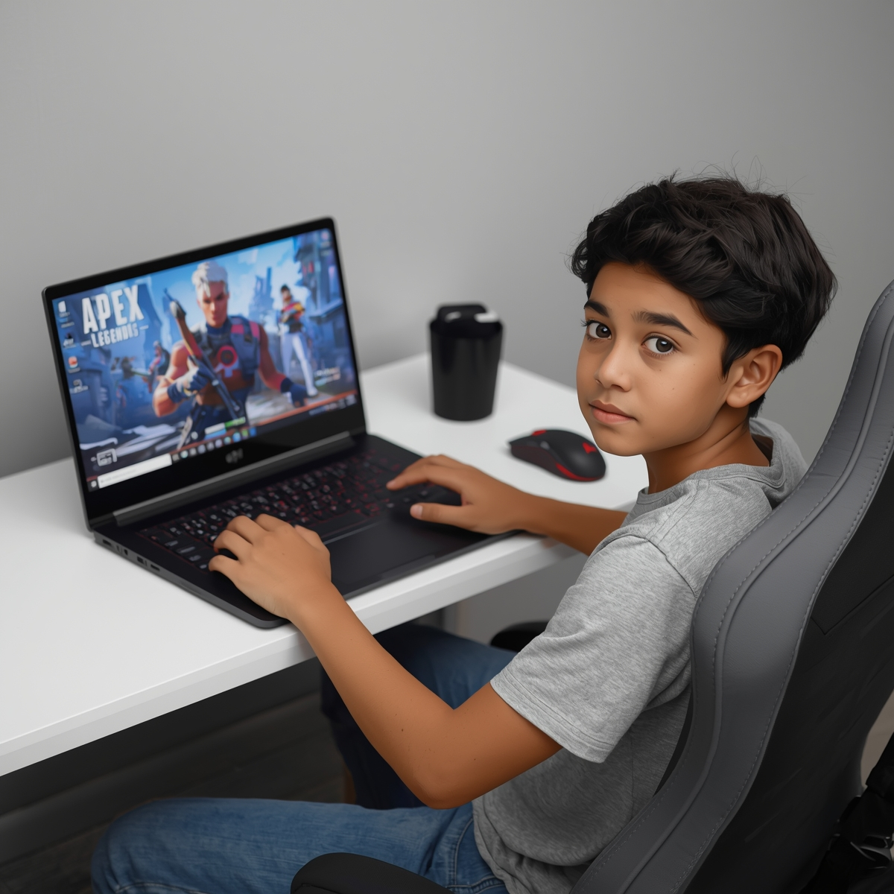

diff --git a/Grupo16.html b/Grupo16.html
index 4d851aa..d0add92 100644
--- a/Grupo16.html
+++ b/Grupo16.html
@@ -1,29 +1,90 @@
 <!DOCTYPE html>
-<html lang="en">
+<html lang="es">
 <head>
     <meta charset="UTF-8">
     <meta name="viewport" content="width=device-width, initial-scale=1.0">
 <html>
+
 <head>
 
     <title>TP Grupo N 16</title>
+    <link rel="icon" href="Imagenes/logo.png" type="image/x-icon">
 
 </head>
 
+<style>
+    h1{
+    text-align: center;
+}
+.photo{
+    text-align: center;
+}
+p{
+    text-align: center;
+}
+.parr{
+    font-size: 20px;
+    text-align: left;
+}
+h2{
+    text-align: center ;
+}
+table {
+        width: 80%;
+        margin: 20px auto;
+        border-collapse: collapse;
+        font-family: Arial, sans-serif;
+}
+th, td {
+    border: 1px solid black;
+    padding: 10px;
+    vertical-align: top;
+    text-align: left;
+}
+th {
+    background-color: #f2f2f2;
+    text-align: center;
+    font-size: 18px;
+}
+td {
+    font-size: 14px;
+}
+iframe{
+    display: block;
+    margin: 0 auto;
+}
+#fotito{
+    width: 500px;
+    height: 300px;
+    margin: 60px;
+}
+#comparativa{
+    width: 50%;
+}
+
+</style>
+
 <body>
 
 <header>
-
-        
+    <div class="photo">
+         
+    </div> 
 </header>
 
 <h1><u>Licenciatura en Sistemas de Informacion<br>y Análisis de Sistemas</u></h1>
+
+<hr>
+
 <h1><i><u>Fundamentos de Computación</u></i></h1>
-<p><strong><u>Equipo docente</u></strong><br>
+
+<p>
+    <strong><u>Equipo docente</u></strong><br>
     Bioing. Ismael Cassi <br>
     Paolo Orundés Cardinali
 </p>
-<p><strong><u>Integrantes</u></strong><br>
+<p>
+    <strong><u>Integrantes</u></strong><br>
     Duarte Lourdes <br>
     Fissolo Brian <br> 
     Rodriguez Mateo
@@ -34,9 +95,10 @@
 
 <hr>
 
-<h1><u>Streaming de videojuegos</u></h1>
+<h2><u>Streaming de videojuegos</u></h2>
 
-<p><strong>Apex Legends</strong> es uno de esos juegos que te atrapan rápido. Es un battle royale gratuito con un giro
+<p class="parr">
+<strong>Apex Legends</strong> es uno de esos juegos que te atrapan rápido. Es un battle royale gratuito con un giro
     interesante: cada personaje (llamado “Leyenda”) tiene habilidades únicas, lo que le da un aire de 
     hero shooter tipo Overwatch, pero dentro de un mapa enorme donde solo puede quedar un escuadrón en pie.
     Lo que lo hace especial es la velocidad y fluidez del gameplay. Los movimientos son ágiles 
@@ -47,34 +109,250 @@
     modos de juego y Leyendas, así que siempre hay algo distinto que probar. 
     No es solo un battle royale más: está muy pulido y pensado para partidas rápidas pero intensas.
     En pocas palabras: si te gustan los shooters en equipo, rápidos y con un toque estratégico, 
-    este es un título que tenés que probar.</p>
+    este es un título que tenés que probar.    
+
+    <br><br>
+
+    <strong>Apex Legends</strong> es un juego de disparos en primera persona (FPS) del género battle royale. 
+    En él, equipos de 3 jugadores compiten en un enorme mapa para ser el último equipo en pie, usando personajes 
+    llamados “Leyendas” con habilidades únicas que combinan acción y estrategia en tiempo real.
+
+    <br><br>
+
+    Domina con estilo en Apex Legends™, un juego gratuito* de acción en primera persona, donde personajes legendarios
+    con poderosas habilidades forman equipos para luchar y lograr fortuna y gloria en los confines de la Frontera.
+
+    <br><br>
+
+    Domina un elenco creciente y diverso de leyendas, el juego táctico basado en pelotones y las grandes innovaciones que superan 
+    la experiencia del Battle Royale (en un mundo duro en el que todo vale). Te damos la bienvenida a la nueva evolución de los juegos
+    de acción en primera persona.
+</p>
+
+<hr>
+
+<div class="videos">
+    <h2>Gameplay Apex Legends</h2>
+    <iframe width="600" height="400" 
+        src="https://www.youtube-nocookie.com/embed/UMJb_mkqynU?autoplay=1&mute=1" 
+        title="YouTube video player" 
+        frameborder="0" 
+        allow="accelerometer; autoplay; clipboard-write; encrypted-media; gyroscope; picture-in-picture; web-share" 
+        referrerpolicy="strict-origin-when-cross-origin" 
+        allowfullscreen>
+</iframe>
+
+ <h2>Apex Legends - Official Cinematic Launch Trailer</h2>
+
+ <iframe width="600" height="400" 
+        src="https://www.youtube-nocookie.com/embed/oQtHENM_GZU?si=TZDydxbiMhvB7od8" 
+        title="YouTube video player" 
+        frameborder="0" 
+        allow="accelerometer; autoplay; clipboard-write; encrypted-media; gyroscope; picture-in-picture; web-share" 
+        referrerpolicy="strict-origin-when-cross-origin" 
+        allowfullscreen>
+</iframe>
+
+<hr>
+
+<div class="imagen">
+    <h2>Imágenes ilustrativas</h2>
+    
+    
+    
+</div>
+
+<hr>
+
+<h2><u><i>Requisitos de Apex Legends</i></u></h2>
+
+<table>
+        <tr>
+            <th>Requisitos Mínimos</th>
+            <th>Requisitos Recomendados</th>
+        </tr>
+        <tr>
+            <td>SO: 64-bit Windows 10</td>
+            <td>SO: 64-bit Windows 10</td>
+        </tr>
+        <tr>
+            <td>Procesador: AMD FX 4350 o Intel Core i3 6300</td>
+            <td>Procesador: Ryzen 5 o equivalente</td>
+        </tr>
+        <tr>
+            <td>Memoria: 6 GB de RAM</td>
+            <td>Memoria: 8 GB de RAM</td>
+        </tr>
+        <tr>
+            <td>Gráficos: AMD Radeon HD 7790 o NVIDIA GTX 950</td>
+            <td>Gráficos: AMD Radeon R9 290 o NVIDIA GTX 970</td>
+        </tr>
+        <tr>
+            <td>DirectX: Versión 12</td>
+            <td>DirectX: Versión 12</td>
+        </tr>
+        <tr>
+            <td>Red: Conexión de banda ancha a Internet</td>
+            <td>Red: Conexión de banda ancha a Internet</td>
+        </tr>
+        <tr>
+            <td>Almacenamiento: 75 GB de espacio disponible</td>
+            <td>Almacenamiento: 75 GB de espacio disponible</td>
+        </tr>
+</table>
+<p>(Los requisitos fueron sacados de<a href="https://store.steampowered.com/app/1172470/Apex_Legends/" target="_blank"> steam)</a></p>
+
+<hr>
+
+<h2><u>Necesidades adicionales para transmisión</u></h2>
+
+<p class="parr">Para hacer streaming de <strong>Apex Legends</strong> se usara la plataforma de <strong>KICK</strong>. Para el software de transmisión el grupo
+decidio usar <strong>OBS</strong>, debido a su popularidad, sensillo uso y su forma de configuracion versatil y muy comoda de manipular, ademas
+de ser un software de licencia gratuita.
+
+<br><br>
+
+En cuestiones de red o wifi, la conexion siempre tiene que ser y va a ser a cable, ya que asi no se pierde velocidad de red ni cortes de wifi no deseados, 
+tambien que la conexion al ser por cable la latencia es mas baja y estable, muy importante a la hora de jugar online y hacer streaming.
+Para una ventaja a la hora de hacer streaming es la posibilidad de tener la tecnologia que NVIDIA integro a varios modelos de sus tarjetas graficas, 
+me refiero al codificador NVENC (Nvidia Encoder), este se encarga de la codificación de vídeo, descargando esta tarea intensiva 
+de la CPU a una sección específica de la GPU. Esto permite que la CPU y los núcleos gráficos se dediquen a otras tareas.
+Daria una muy buena calidad al streaming siempre y cuando se configure correctamente.
+
+<br><br>
+
+Con respecto a los perifericos lo ideal para disfrutar personalmente y bien competitivamente del juego seria una buena adquisicion un monitor de 144hz ya que daria una 
+experiencia linda a la hora de jugar y una ventaja de frames hablando competitivamente. Por tema voz y audio, hay que ofrecerle al espectador un buen sonido
+de voz y un micrófono bueno mas una buena configuracion, ofreceria una buena experiencia al espectador y tambien a los compañeros de juego.
+Unos headset o unos auriculares para una experiencia personal y poder escuchar bien las interacciones con el juego seria otro punto a favor del stream.
+Y en caso de querer mostrar el rostro, una WebCam seria otra compra que favoreceria el stream.
+</p>
+
+<hr>
+
+<h2> <u>Comparativa frente a otros videojuegos del mismo género</u></h2>
+
+ <p class="parr"><strong>Apex Legends, Fortnite y Warzone</strong> 
+    son juegos del género Battle Royale,
+    pero cada uno tiene un estilo particular.
+    Realizaremos una comparativa breve, analizando modos de juego,
+    gráficos y requerimientos de hardware de cada uno.</p>
+
+<table id="comparativa">
+    <tr>
+      <th>Call of Duty: Warzone Caldera vs. Apex Legends</th> 
+      <th>Fortnite vs Apex Legends</th>
+    </tr>
+    <tr>
+      <td>
+        
+      </td>
+      <td >
+        
+      </td>
+    </tr>
+    <tr>
+      <td>
+        <p> En cuanto a gráficos, Warzone apuesta al realismo,mientras que Apex se centra
+        en un estilo más futurista y fantástico. Respecto a los modos de juego y estilo de combate, Apex enfatiza la estrategia, el posicionamiento,
+        las habilidades de los personajes y el trabajo en equipo, con un ritmo de bajas más lento que exige planificación.
+        Warzone, en cambio, permite un estilo más directo y agresivo, basado en puntería y reflejos,
+        con menor enfoque táctico y mayor protagonismo del juego individual.
+        En cuanto a requerimientos de hardware, Warzone necesita un procesador más moderno y potente,
+        2GB mas adicionales de RAM y una tarjeta gráfica capaz de soportar gráficos detallados y altas tasas de FPS.
+        Los demás componentes, como sistema operativo, DirectX, conexión a Internet, son similares, solo que warzone ocupa mas
+        almacenimiento. </p>
+      </td>
+      <td>
+       <p>Por otro lado Fortnite se distingue por ser colorido y creativo, con mecánicas de construcción y numerosos eventos sociales dentro del juego.
+        En cuanto a hardware, Fortnite y Apex Legends presentan diferencias claras.
+        Fortnite requiere un procesador con mayor frecuencia base, mientras que Apex demanda más núcleos y un rendimiento general superior.
+        En memoria RAM, Fortnite necesita 16 GB, el doble que Apex Legends, que requiere 8 GB recomendados. Ambos juegos requieren tarjetas gráficas dedicadas,
+        pero Apex exige modelos más potentes para un rendimiento óptimo. En almacenamiento, Apex ocupa 75 GB frente a los 26 GB de Fortnite.
+        Finalmente, Fortnite utiliza DirectX 11, mientras que Apex Legends requiere DirectX 12, lo que implica una mayor demanda de hardware.</p>
+      </td>
+    </tr>
+  </table>
+     <p class="parr">En resumen, Apex Legends se centra en la táctica y el trabajo en equipo, 
+        Fortnite ofrece una experiencia creativa y social, mientras que Warzone prioriza la acción directa y el realismo,
+        adaptándose a distintos estilos de juego y preferencias de los jugadores.
+    </p>
+
+<hr>
+ 
+<h1><u>Parte 2 del Trabajo Practico (Segundo Commit)</u></h1>
+<h1>Presupuesto PC Mateo Rodriguez de 1000USD</h1>
+
+
+<iframe src="presupuesto.pdf" width="500" height="500"></iframe>
+
+<p>Para calcular el consumo del presupuesto decidi calcularlo con la pagina que ofrece MSI para calcular los Wats que en teoria ocuparia tu pc
+    la pagina es la siguiente: <a href="https://latam.msi.com/power-supply-calculator" target="_blank">Calculadora MSI</a>
+</p>
 
 <hr>
 
-<h3><u><i>Requisitos de Apex Legends</i></u></h3>
-
-<h4><strong>MÍNIMO:</strong></h4>
-<ul>
-    <li>Requiere un procesador y un sistema operativo de 64 bits</li>
-    <li>SO: 64-bit Windows 10</li>
-    <li>Procesador: AMD FX 4350 or Equivalent, Intel Core i3 6300 or Equivalent</li>
-    <li>Memoria: 6 GB de RAM
-    <li>Gráficos: AMD Radeon™ HD 7790, NVIDIA GeForce® GTX 950</li>
-    <li>DirectX: Versión 12</li>
-    <li>Red: Conexión de banda ancha a Internet</li>
-    <li>Almacenamiento: 75 GB de espacio disponible</li>
-</ul>
-
-<h4><strong>RECOMENDADO:</strong></h4>
-<ul>
-    <li>Requiere un procesador y un sistema operativo de 64 bits</li>
-    <li>SO: 64-bit Windows 10</li>
-    <li>Procesador: Ryzen 5 CPU or Equivalent</li>
-    li>Memoria: 8 GB de RAM</li>
-    <li>Gráficos: AMD Radeon™ R9 290, NVIDIA GeForce® GTX 970</li>
-    <li>DirectX: Versión 12</li>
-    <li>Red: Conexión de banda ancha a Internet</li>
-    <li>Almacenamiento: 75 GB de espacio disponible</li>
-</ul>
+<h2>Interacciones con IA (Mateo Rodriguez)</h2>
+
+<h1>Actividad 1</h1>
+<div class="photo">
+    
+</div>
+<p class="parr">
+    Le pedi a chat gpt que me recomiende una placa de video y un procesador y me termino ofreciendo un presupuesto, el presupuesto no me convencio del todo, 
+    igual tome la recomendacion de la grafica. El procesador esta buenisimo pero el presupuesto es muy ajustado, ademas ofrecio una fuente de 500w que no es para nada
+    recomendable para una pc con una grafica de un tdp de 170w, lo ideal seria una fuente de 650w, 700w o mas.
+</p>
+<hr>
+<h1>Actividad 2</h1>
+
+<div class="photo">
+    
+</div>
+
+<p>La fuente externa de ambas comparaciones fueron sacadas de la pagina oficial de NVIDIA y la pagina oficial de AMD.</p>
+<h2>Requisitos de <a href="https://www.nvidia.com/es-la/geforce/graphics-cards/30-series/rtx-3060-3060ti/" target="_blank">RTX 3060</a>
+<br>
+Requisitos de <a href="https://www.amd.com/es/products/graphics/desktops/radeon/6000-series/amd-radeon-rx-6700-xt.html" target="_blank">RX 6700XT</a>
+</h2>
+<p class="parr">Yo me quedo con NVIDIA ya que esta PC esta hecha para stremear y la opcion mas optima es la RTX 3060, 
+mas que nada por su codificador NVENC y el rendimiento que ofrece
+</p>
+
+<hr>
+
+<h1>Actividad 3</h1>
+<div class="photo">
+
+</div>
+<p class="parr">
+    El bitrate o la tasa de bits en stream, es la cantidad de datos que se transmiten por segundo,
+    Estos normalmente se miden por kilobits por segundo o megabits por segundo. 
+    Cuando el bitrate es mayor, la calidad del stream es mejor, pero tambien consume mucho mas ancho de banda.
+</p>
+<div class="photo">
+    
+</div>
+<p class="parr">
+    La latencia es el retraso que tiene la señal para llegar de un lugar a otro, la señal de la latencia se mide en milisegundos (ms), 
+    explicado mas facil es como cuando el delivery no llega por que hay mucho transito
+</p>
+<div class="photo">
+    
+</div>
+<p class="parr">La funcion que cumple la GPU es basicamente renderizar imagines y graficos y mostrarlas en tu pantalla, lo que hace en los juegos basicamente es 
+    procesar imagines y mostrarlas en texturas, iluminacion, sombras y efectos.
+</p>
+
+<hr>
+<h1>Actividad 4</h1>
+<h2>El sueño de ser un Streamer reconocido</h2>
+<div class="photo">
+
+</div>
+<p class="parr">
+    Le dije a la IA que me haga una imagen de un adolescente jugando Apex y stremeando desde su habitacion desde una pc de bajos recursos queriendo vivir del stream.
+    Basicamente el sueño de la mayoria de adolescentes y muchas personas hoy en dia.
+</p>
 </body>
-</html>
+</html>
\ No newline at end of file
